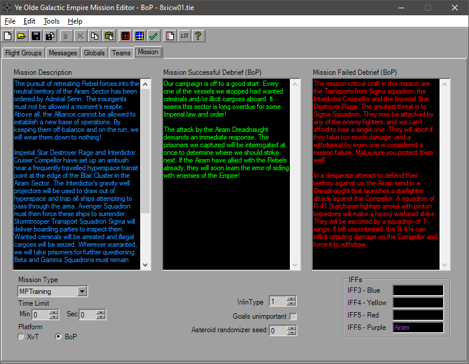

Mission Parameters

The Mission tab sets a couple of other overall settings. The large text boxes at the top (when available) are the mission texts for before and after the missions.
Below that is the Mission Type, which normally will be "Training". Set a time limit for the mission if you wish, and below that is the option to toggle the mission between XvT and BoP.
There's some Unknown values that you can play with as well here.